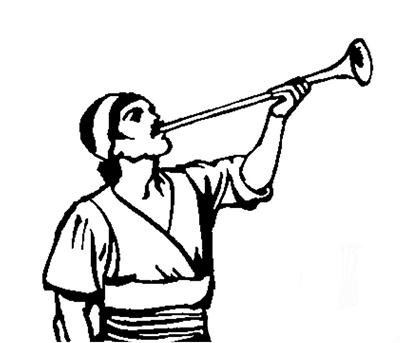

Amik uro yabinepne sembe
Yohanes whingag lag taogha
1
1 Allah yubu mome toro piroba eneag wamlangena, Yesus nu Talulamsildi Saelbamsilne Kristusa ponekori amik uro yabinepne liliag wamlange agha Yesusti lag nembaonge agha mome toroba wamla. Allahri Yesus nu Talulamsildi Saelbamsilne ponekoag ambarelamori, “Yesusti nen tipto Allah arukna urop nimiag wene men phea uro yabilulne sembe ambatsilul,” aro ambaro. Ambaroba, Yesus Kristusti Eldi arukna imagne malaikat poghoba, Kristus arukna na si Yohanes wamnangeag yaori, tamna “Undo-undo uro yabilul,” aro na Yohanesag ambatneo. 2 Wene aro ambatneoba, na Yohanesti haingdi nia ni imnonge nimi ni ambarelamsinnena, Allahri yubu sembe babe, Yesus Kristus ponekori yubu ambatneonge babe ambarelamsin. 3 Ni undo uro yabilulne sembe Allahri ambatneoba, tipto ambarelamsinne nene ko'o olog we uro wamebe komag agha uro yabilul. Ane sembe nimi etneri nari mome toro ambarelamsinne nene kembaleri, leple tanena, Allahri nimi nene sembe wali sembaleba, wali wamlul. Nimi etneri yubu nene ka'ebaleri, salero sunsunum uro ulamle tanena, Allahri nimi nene sembe wali sembaleba, wali wamlul.Yesusag sikne aro seneragto winiptangtop nimi as saekbare wamek nimiag kipsiogha
4-5 Nangkabo, Yesusag sikne aro seneragto winiptangtop nimi as saekbare Asia so'oag wamlom nimi kiplamsin. Nari a'un sembe molbarelamsinne, “Elap Eldamne Yame neneap Eldi weptopne Yesusapti a'un wana aingnibahiikti, wana walingeag agha walia ulamsukang,” aro a'un sembe molbarelamsin. Allah poneko El wamlange, wamogne, wamle paghabog wamlul. Allah ponekori nia mangkina saelbamsilne poneko El mikip sirikne pukuroba whingag aneko Eldamne Yame Walinge eneko yame saekbare ua ulamang. Allahri weptopne Yesus Kristus poneko el mo samenagne nimi teptobag agha nen kamag taog. Eldi haingdi ililamongeap ililamlangeap sik uro sol wali uro tipto ambatneo. El agha nimi so'oag nimi yubu sia lerop nimi ubu piamangba, El agha yubu sia leropne paliag sirik wamla. Yesus ponekori nu sembe ulamognena, Nuri mali-malia ulamubungeri nu wana sao kauplamsiog aghana, Yesusti nu sembe o'ona sirik sembaogti, El nu sembe tebaogti, Eldi enengag agha nuri wana kaupna lobitsiog. 6 Yesusti nu lobitsiogti, nu Saelba Uhiropne Allah yubu ka'ero sunsunum uro ulamap nimi nembahiogti, memnang wamloa saog nimi nembahiog andarina, nu Allah omekto Eldi awe torop nimi wamap. Yesusti nu Allah whingag wali nembahiog ane sembe, El Kristus mikip sirikne ponekoag papna koma ya'ag uro omeklamukap. Sikne agha lebap.
7 Tiwalengkahut! Toa pololong aropne pere agha Yesus nen samoro kulukul anual!
Nimi ni haingdi El kulukul alea ibukang.
Sin ibik nimi anabiag agha El Yesus alukto obek nimiri babe ibukang.
Nimi sisa ni mog so'oag wamang nimi agha niri El sembe ngolol alamukang.
Sik uro lebap. Undo uro yabilul.
8 Nuni Allahri lelamlangena, “Na tamag tomeagne wamna. Nia mangkina wamna komag samenagne wamsiri, komobanep komne wamnunne wamna,” alamla. El aghabog Mikip Phelektopne wamlange, wamogne, wamle paghabog wamlul.
Yohanesti haingdi ibogha
9 Na Yohanes a'unkae wamnange a'un seklelamlom saog uro na babe seklelamnange wamna. Na seklelamnangena, nimiri nu Talulamsildi Saelbamsilne Yesus ponekoag neleptop nimi sekleroba na babe seklelamnari wamna. Sekleroba wamlea babe, Elag neleptop nimi seklenne wameberi, wana mamleba wamukap. Na mag longo kanektobag Patmos toro tobog aneeknena, Allahri “Yubu ambatsilulom,” arop yubu Yesusti ambarelamsiogti, nubu nembaog yubu nene nari babe ambarelamsisi. Ambarelamsisi aghana nimiri Yesus yubu sembe karongdi, “Nimi oroghag weag wamlulam,” aro na mag longo kanektobag Patmos tane toro tobog aneekpa, na wana maropneag agha seklelamna. 10 Nu Saelba Ulamsilne poneko omekto winirop sum Allah Yame Walinge nanag taneori yepneoba, ka'elamnoba, yubu nubu uro na wailag siba nanag yubu lelamo. Nanag yubu lelamonge yubu lilim neneko ma'i lom pho arobag yubu lilim nubu uro lerop saog uro yubu lelamoa ka'ebano.

Samenag yubu sia leropne nubunge yingkinebag eldi aruknari, “Yanual,” aro ma'i saog uroba si trompet engeropne yubu lilim nubu uro pho alamek. Yesus nen samoro yalul sum babe Allah arukna imagnang malaikat sikindori Yesus yanepne sembe yubu lilim nubu uro ma'i saog uropne trompet phoalamlul. (1 Tesalonika 4:16) (REV 1.10)
11 Yubu lelamoa ka'ebanongena, “Andi haingdi ililamlama ni momeag toro piplulam. Mome toro pipmendi, Allah Elmabo poloro winiroba as soro kalurop as saekbare wamangneag piplulam. As soro kalurop as saekpare nenena: Efesus, Smirna, Pergamus, Tiatira, Sardis, Filadelfia apna Laodikia nimiag piplulam,” aro wene alamo.
12 Wene alamoba, “Etneri nanag yubu lelamla,” aro tangabom agha wailag sip kembano. Kemelamnoag agha auk tiniro iktoba yan saekbare leng-leng aroba kamna alikinag uro toroba emas agha sunuroba imno. 13 A'uk tiniro iktoba yan taneko lulu phik agha kemelamnoag agha imagne mog so'oag nimi taogne nhon sekamoba imno. Eldi ag nongag enekamoba imnongena ag nongag agha yanag tau siliro pelengka uropne siliplengkamoa imno. Saramag enekamoa imnongena, leng-leng aroba kamna alikinag uro toroba emas agha noptop ag sunuroba saramag ek wa'aneropne wanwan aro enekamoba imno. 14 Eldi usog hongna solomne pham domba hong saog uro solom sirikne wamoa imno. Eldi haing wanaag auk pog warea uropne saog wamoa imno. 15 Eldi yan imnongena kirik alneropba mheng-mhenga agha uwong i arop saog wamoa imno. Eldi yubu ka'ebanongena mag mhun yangkalamnari nubu uro yubu lelamloa saog uro lelamoa ka'ebano. 16 Sae sirik sip saelbamoa imnongena imbrea saekbare saeag saelbamoa imno. Eldi silomag lanalamoa imnongena karog yonge si tara tara yo wamoa imno. Eldi whing imnongena heng siro tingiropne saog uro tingkamoa imno. 17 Nari ililamnori, na nimi teptop nimi saog uro el tamag u amupto malingkino. Malingkino aghana eldi sae sirik sae nanag paia,
“An log sembaheng kom! Nana nia mangkina wamna komag samenag wamsia, amik babe komobanep komne wamne paghabog wamnunne wamna. 18 Na kamag wamnange poneko Na wamna. Na ya'ag tebahi aghana Na kamag tahiri, wamnange poneko wamne kekman wamnunne poneko wamna. Nimi teptoba sembe babe, teptop nimi ua urobagne sembe babe, Nari ina ane serekanep. Tam nene Naringe aghabog wamlaba, ot Nan agha nimi teptopne ua urobagb agha kamag nembahinep. 19 Ane sembe andi haingdi nia ni wene iplamneap, wene uro yabilneap, amik uro yabilulneap mome toro piplulam. 20 Nerane agha tognoropne imbrea Nari saeag wamlaba, iplamne tanekoap, auk pog tiniro ikna yan leng-leng aroba agha sunuroba kamna alikinag uro toroba iplama anekoap, tibin nenero ambatkenuan.
Imbrea saekbare abenekona, Na Yesusag sikne aro seneragtop nimi as saekbare abenekoag winiro wamang nimi sembe paia uro Allah yubu ambatsirop nimic saekpare wamangdi, kekneba imbrea saekpare nari saeag wamangne abeneko iplam. Auk pog tiniro iktoba yan leng-leng aroba agha sunuroba kamna alikinag uro toroba wamlaba, saekpare iplamne nenekona, Na Yesusag sikne aro seneragtop nimi as saekbare a'ero-a'ero winiro wamang nimi eneko sembe, kekneba auk pog tiniro yan saekpare iplamne neneko wamla,”
seo.
Ane sembe, “As saekbare abenekoag winiro wamang nimiag mome toro piplulam,” aro ambatneonge agha mome toro pipnonge nene.